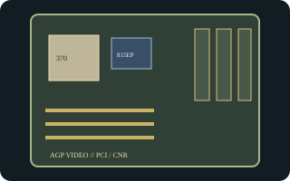

[ INDIVIDUAL COMPONENT // MOTHERBOARDS ]
Intel Desktop Board D815EPFV
Compact Intel Socket 370 platform for Pentium III/Celeron processors using the 815EP chipset. D815EPFV is the microATX board without integrated graphics; it is not D815EFV.

Exact identity and revision: Intel Desktop Board D815EPFV; Intel family Product Guide A52560-002 and standard BIOS ID EA81520A.86A. Read the specimen's AA/PCB revision and BIOS ID before choosing a processor or update file.
Specifications
| CPU / socket / chipset | Socket 370 Intel Pentium III/Celeron models listed for the exact board/BIOS; Intel 815EP with ICH2. No integrated graphics. |
|---|---|
| Form factor / case | MicroATX, 9.6 x 8.2 in.; microATX or ATX case with verified standoffs and rear-I/O alignment. |
| Memory | Three 168-pin SDRAM DIMM sockets, PC100/PC133, up to 512 MB supported. |
| Expansion | One AGP, three PCI, and optional CNR position depending on assembly. AGP graphics card required for display. |
| Storage | Two IDE channels supporting ATA/100 and one floppy connector. |
| Rear I/O | PS/2 keyboard/mouse, serial, parallel, USB 1.1, and audio; no onboard VGA output. |
| BIOS / PSU | Intel BIOS ID EA81520A.86A for the documented product family; verify model/AA before recovery. Standard 20-pin ATX input; confirm PSU wiring and legacy rail capacity. |
Compatibility and revision notes
Because 815EP has no integrated graphics, an AGP card is necessary; check voltage keying against the slot before fitting a card. The shared Intel guide distinguishes EPFV from EFV. CPU, RAM, case, and firmware decisions must follow the printed board model and AA revision.
Sources & further reading
- Intel Desktop Boards D815EFV/D815EPFV Technical Product Specification (archived scan)Intel-authored board specification covering EPFV layout, BIOS, power, and interfaces.
- Intel Desktop Boards D815EEA2/D815EPEA2/D815EFV/D815EPFV Product Guide (archived scan)Intel product guide with the model-specific EPFV configuration.